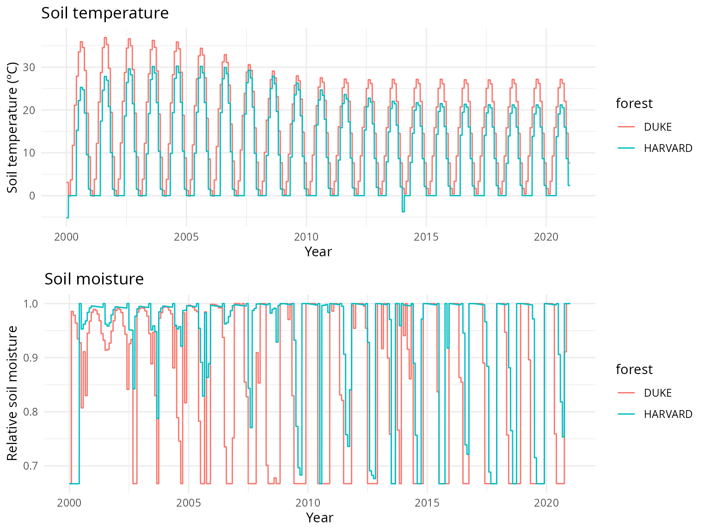
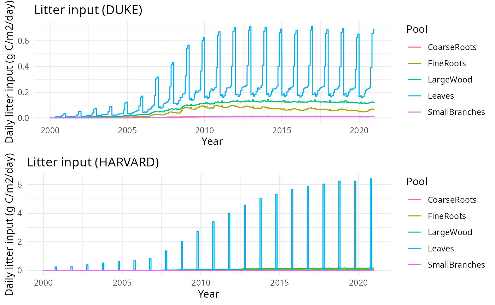

Verification of carbon decomposition (DAYCENT)
Inés Delsman Valderrama (CREAF), Miquel De Cáceres (CREAF)
2026-05-06
Source:vignettes/evaluation/CENTURYVerification.Rmd
CENTURYVerification.RmdIntroduction
This document presents an exercise to verify the implementation of the carbon decomposition process of DAYCENT into MEDFATE. The verification is done against the outputs of CENTURY (ver. 4.7) corresponding to simulation of Duke and Harvard forests.
Methods
Initial soil carbon content
Surface structural (
strucc(1)) was applied as the initial carbon content for theLeavespool. Similarly, belowground structural (strucc(2)) was applied to theFineRootspool. The remaining litter pools (snags, small branches, large wood and coarse roots) are set to zero initial value.We took the soil organic carbon (SOC) initial values from the CENTURY
site.100input file, and the surface and belowground metabolic data from the first row of the output file of our CENTURY simulation of the Duke site.
| MEDFATE pool | CENTURY parameter | DUKE | HARVARD |
|---|---|---|---|
Leaves |
strucc.1. |
72 | 311 |
FineRoots |
strucc.2. |
58 | 223 |
SurfaceMetabolic |
metabc.1. |
28 | 89 |
BelowgroundMetabolic |
metabc.2. |
42 | 477 |
SurfaceActive |
SOM1CI(1,1) |
65 | 105 |
BelowgroundActive |
SOM1CI(2,1) |
60 | 120 |
SurfaceSlow |
SOM2CI(1,1) |
850 | 1400 |
BelowgroundSlow |
SOM2CI(2,1) |
1100 | 1800 |
BelowgroundPassive |
SOM3CI(1) |
1200 | 1200 |
Decomposition parameters
Litter decomposition parameters
| Species | LeafLignin | WoodLignin | FineRootLignin | Nleaf | Nsapwood | Nfineroot | LeafLigninN |
|---|---|---|---|---|---|---|---|
| DUKE | 20.0 | 25 | 20 | 5.000000 | 1.744186 | 10 | 40.000 |
| HARVF | 20.3 | 25 | 8 | 8.474576 | 4.658385 | 10 | 23.954 |
Maximum decomposition rates
The maximum (base) decomposition rates for the different soil pools
in MEDFATE (i.e. control parameter baseAnnualRates) were
adapted to match the maximum rates from CENTURY (these can be found in
the fix.100 file).
Element in baseAnnualRates
|
CENTURY pool | CENTURY parameter | Value |
|---|---|---|---|
Leaves |
Surface structural | DEC1(1) |
3.9 |
FineRoots |
Belowground structural | DEC1(2) |
4.9 |
SurfaceMetabolic |
Surface metabolic | DEC2(1) |
14.8 |
BelowgroundMetabolic |
Belowground metabolic | DEC2(2) |
18.5 |
SurfaceActive |
Surface active | DEC3(1) |
6 |
BelowgroundActive |
Soil active | DEC3(2) |
7.3 |
BelowgroundPassive |
Soil slow turnover | DEC4 |
8^{-4} |
SurfaceSlow |
Surface intermediate | DEC5(1) |
0.03 |
BelowgroundSlow |
Soil intermediate | DEC5(2) |
0.07 |
Maximum decomposition rates for dead wood pools (small branches,
large wood and coarse roots) were taken from elements
DECW1, DECW2 and DECW3 of
tree.fix.
Element in baseAnnualRates
|
CENTURY parameter | DUKE | Harvard |
|---|---|---|---|
SmallBranches |
DECW1 |
1.5 | 1.5 |
LargeWood |
DECW2 |
0.5 | 0.5 |
CoarseRoots |
DECW3 |
0.6 | 0.6 |
Rate of mixing between surface slow and belowground slow compartments
was taken from tree.100:
Element in control
|
CENTURY parameter | DUKE | Harvard |
|---|---|---|---|
annualTurnoverRate |
TMIX |
0.11 | 0.11 |
Environmental variation
Variation of environmental conditions for carbon decomposition were
drawn from CENTURY outputs. Specifically, soil temperature was taken
from CENTURY variable stemp, whereas CENTURY variable
asmos.1. was used to estimate soil relative moisture.

Litter input
Litter inputs (senescence of leaves, small branches, large wood, fine
roots and coarse roots) are estimated using CENTURY output corresponding
to variation in live carbon pools in the forest system
(i.e. rleavc, fbrchc, rlwodc,
frootc and crootc) and the CENTURY parameters
specifying monthly death rates for those live pools (i.e. leaf death
rates leafdr(x) for each month and wooddr(2-5)
for the remaining four pools, and wooddr(1) in case of a
deciduous forest).

Simulations
MEDFATE simulations were run using function
decomposition_DAYCENT().